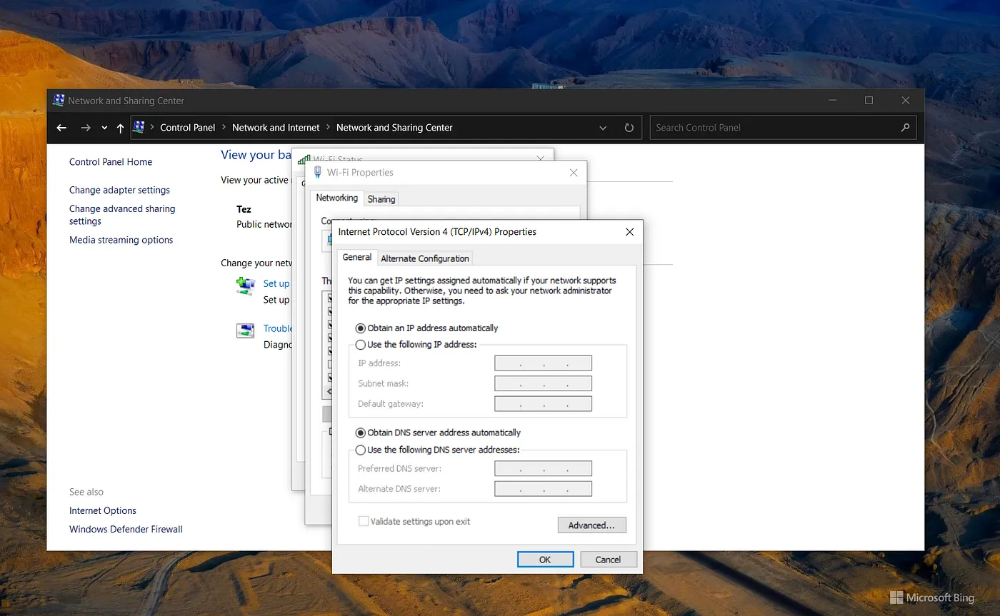

Introduction
In modern computer networks, the Dynamic Host Configuration Protocol (DHCP) is a client-server protocol that automatically provides a host with its IP address and other related configuration. DHCP automates the task of assigning IP addresses, subnet masks, default gateways, and other network parameters to devices, making network management more efficient.
How DHCP Works
- DHCP Discovery:
When a DHCP client connects to a network, it sends a DHCP discovery message (DHCP DISCOVER) to locate available DHCP servers. This broadcast message is forwarded by DHCP relay agents if present.
- DHCP Offer:
Upon receiving the DHCP discovery message, one or more DHCP servers respond with a DHCP offer message (DHCPOFFER). The offer includes an available IP address, lease duration, subnet mask, default gateway, DNS server information, and other network parameters.
- DHCP Request:
The client selects one DHCP offer and sends a DHCP request message (DHCPREQUEST) to the respective DHCP server, requesting the offered IP address.
- DHCP Acknowledgment:
The DHCP server responds with a DHCP acknowledgment message (DHCP ACK), confirming the IP address lease and providing the client with the network configurations. The client then configures its network interface with the received information.\
Benefits of DHCP
- Simplified IP Address Management:
It automates and enables centralized IP address management, making it easier to add, remove, or relocate devices within the network.
- Efficient Resource Utilization:
It prevents IP address conflicts and ensures efficient utilization of available addresses, which includes cases where laptops that move to different locations on a wireless network.
- Flexibility and Scalability:
DHCP allows for easy scalability as networks grow or change. Additional DHCP servers can be deployed, and subnet configurations can be modified without significant disruptions.
- Streamlined Network Configuration:
DHCP ensures accurate and consistent network settings by providing network parameters such as subnet masks, default gateways, and DNS server information.
Candidates of DHCP
Personal Computers and other handheld devices are good candidates to be DHCP clients because they would save the admin a lot of time configuring them. As they do not accept incoming connections so it does not matter if their IP address changes. Mission-critical devices such as servers, routers, and switches are typically never DHCP candidates as they are important for the network to function. Their IP addresses are manually configured.
Conclusion
DHCP is a fundamental networking protocol that automates IP address allocation and network configuration, enhancing network management efficiency. By eliminating manual IP address assignment and providing dynamic allocation, DHCP simplifies administration, reduces errors, and improves resource utilization. Understanding DHCP’s components, working principles, and benefits is essential for network engineers as well as cloud engineers.